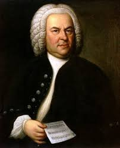

German composer and pianist. A crucial figure in the transition between the Classical and Romantic eras in Western art music, he remains one of the most famous and influential of all composers. His best-known compositions include 9 symphonies, 5 piano concertos, 1 violin concerto, 32 piano sonatas, 16 string quartets, his great Mass the Missa solemnis, and one opera, Fidelio. Born in Bonn, then the capital of the Electorate of Cologne and part of the Holy Roman Empire, Beethoven displayed his musical talents at an early age and was taught by his father Johann van Beethoven and by composer and conductor Christian Gottlob Neefe. At the age of 21 he moved to Vienna, where he began studying composition with Joseph Haydn and gained a reputation as a virtuoso pianist. He lived in Vienna until his death. By his late 20s his hearing began to deteriorate, and by the last decade of his life he was almost completely deaf. In 1811 he gave up conducting and performing in public but continued to compose; many of his most admired works come from these last 15 years of his life.
Wolfgang Amadeus Mozart, baptised as Johannes Chrysostomus Wolfgangus Theophilus Mozart,[2] was a prolific and influential composer of the Classical era. Born in Salzburg, he showed prodigious ability from his earliest childhood. Already competent on keyboard and violin, he composed from the age of five and performed before European royalty. At 17, Mozart was engaged as a musician at the Salzburg court, but grew restless and traveled in search of a better position. While visiting Vienna in 1781, he was dismissed from his Salzburg position. He chose to stay in the capital, where he achieved fame but little financial security. During his final years in Vienna, he composed many of his best-known symphonies, concertos, and operas, and portions of the Requiem, which was largely unfinished at the time of his death. The circumstances of his early death have been much mythologized. He was survived by his wife Constanze and two sons. He composed more than 600 works, many acknowledged as pinnacles of symphonic, concertante, chamber, operatic, and choral music. He is among the most enduringly popular of classical composers, and his influence is profound on subsequent Western art music. Ludwig van Beethoven composed his own early works in the shadow of Mozart, and Joseph Haydn wrote: "posterity will not see such a talent again in 100 years".
Johann Sebastian Bach[a] (31 March [O.S. 21 March] 1685 – 28 July 1750) was a German composer and musician of the Baroque period. He is known for instrumental compositions such as the Brandenburg Concertos and the Goldberg Variations, and vocal music such as the St Matthew Passion and the Mass in B minor. Since the 19th-century Bach Revival he has been generally regarded as one of the greatest composers of all time.[3] The Bach family already counted several composers when Johann Sebastian was born as the last child of a city musician in Eisenach. Having become an orphan at age 10, he lived for five years with his eldest brother, after which he continued his musical formation in Lüneburg. From 1703 he was back in Thuringia, working as a musician for Protestant churches in Arnstadt and Mühlhausen and, for longer stretches of time, at courts in Weimar —where he expanded his repertoire for the organ— and Köthen —where he was mostly engaged with chamber music. From 1723 he was employed as Thomaskantor (cantor at St. Thomas) in Leipzig. He composed music for the principal Lutheran churches of the city, and for its university's student ensemble Collegium Musicum. From 1726 he published some of his keyboard and organ music. In Leipzig, as had happened in some of his earlier positions, he had a difficult relation with his employer, a situation that was little remedied when he was granted the title of court composer by the Elector of Saxony and King of Poland in 1736. In the last decades of his life he reworked and extended many of his earlier compositions. He died of complications after eye surgery in 1750. Bach enriched established German styles through his mastery of counterpoint, harmonic and motivic organisation, and his adaptation of rhythms, forms, and textures from abroad, particularly from Italy and France. Bach's compositions include hundreds of cantatas, both sacred and secular.[4] He composed Latin church music, Passions, oratorios and motets. He often adopted Lutheran hymns, not only in his larger vocal works, but for instance also in his four-part chorales and his sacred songs. He wrote extensively for organ and for other keyboard instruments. He composed concertos, for instance for violin and for harpsichord, and suites, as chamber music as well as for orchestra. Many of his works employ the genres of canon and fugue. Throughout the 18th century Bach was primarily valued as an organist, while his keyboard music, such as The Well-Tempered Clavier, was appreciated for its didactic qualities. The 19th century saw the publication of some major Bach-biographies, and by the end of that century all of his known music had been printed. Dissemination of scholarship on the composer continued through periodicals and websites exclusively devoted to him, and other publications such as the Bach-Werke-Verzeichnis (BWV, a numbered catalogue of his works) and new critical editions of his compositions. His music was further popularised through a multitude of arrangements, including for instance the Air on the G String, and of recordings, for instance three different box sets with complete performances of the composer's oeuvre marking the 250th anniversary of his death.
Frédéric François Chopin (/ˈʃoʊpæn/; French: [fʁedeʁik fʁɑ̃swa ʃɔpɛ̃]; born Fryderyk Franciszek Chopin,[n 1] 1 March 1810 – 17 October 1849) was a Polish composer and virtuoso pianist of the Romantic era who wrote primarily for the solo piano. He gained and has maintained renown worldwide as a leading musician of his era, whose "poetic genius was based on a professional technique that was without equal in his generation."[1] Chopin was born in what was then the Duchy of Warsaw and grew up in Warsaw, which in 1815 became part of Congress Poland. A child prodigy, he completed his musical education and composed his earlier works in Warsaw before leaving Poland at the age of 20, less than a month before the outbreak of the November 1830 Uprising. At 21 he settled in Paris. Thereafter, during the last 18 years of his life, he gave only some 30 public performances, preferring the more intimate atmosphere of the salon. He supported himself by selling his compositions and by teaching piano, for which he was in high demand. Chopin formed a friendship with Franz Liszt and was admired by many of his musical contemporaries, including Robert Schumann. In 1835 he obtained French citizenship. After a failed engagement to Maria Wodzińska from 1836 to 1837, he maintained an often troubled relationship with the French woman writer George Sand. A brief and unhappy visit to Majorca with Sand in 1838–39 was one of his most productive periods of composition. In his last years, he was financially supported by his admirer Jane Stirling, who also arranged for him to visit Scotland in 1848. Through most of his life, Chopin suffered from poor health. He died in Paris in 1849, at the age of 39, probably of tuberculosis. All of Chopin's compositions include the piano. Most are for solo piano, though he also wrote two piano concertos, a few chamber pieces, and some songs to Polish lyrics. His keyboard style is highly individual and often technically demanding; his own performances were noted for their nuance and sensitivity. Chopin invented the concept of the instrumental ballade. His major piano works also include mazurkas, waltzes, nocturnes, polonaises, études, impromptus, scherzos, preludes and sonatas, some published only after his death. Influences on his composition style include Polish folk music, the classical tradition of J. S. Bach, Mozart and Schubert, as well as the Paris salons where he was a frequent guest. His innovations in style, musical form, and harmony, and his association of music with nationalism, were influential throughout and after the late Romantic period. Chopin's music, his status as one of music's earliest superstars, his association (if only indirect) with political insurrection, his love life and his early death have made him a leading symbol of the Romantic era in the public consciousness. His works remain popular, and he has been the subject of numerous films and biographies of varying degrees of historical accuracy.
Sources: https://en.wikipedia.org/wiki/Ludwig_van_Beethoven https://en.wikipedia.org/wiki/Wolfgang_Amadeus_Mozart https://en.wikipedia.org/wiki/Johann_Sebastian_Bach https://en.wikipedia.org/wiki/Fr%C3%A9d%C3%A9ric_Chopin